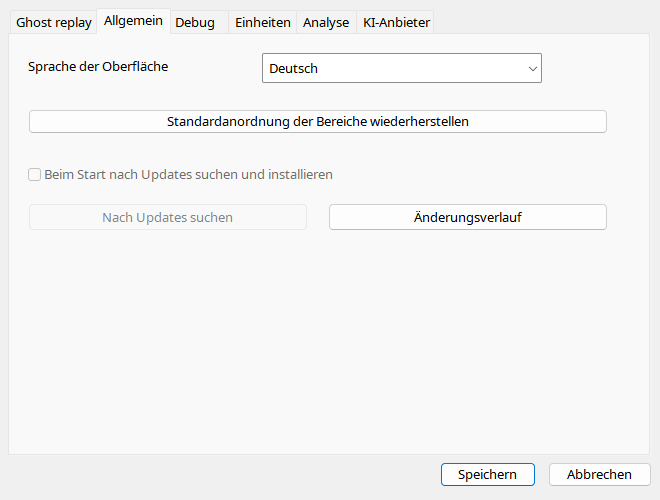

Automatisch erkennt Windows-UI-Sprache und Regionalvariante. Manuelle Wahl bleibt bis zur Rückkehr auf Automatisch. Andere Hilfesprachen verwenden Englisch. Portable-Updates sind absichtlich gesperrt, auch bei altem INI-Eintrag. Setup ist ein Hinweisfenster. Aktualisieren Sie Programmdateien bei geschlossener Anwendung.
| Option / Aktion | Verhalten und Einschränkungen |
|---|---|
| Automatisch | Windows-Oberflächensprache samt regionaler Varianten, sonst Englisch. Manuelle Sprache wird gespeichert. |
| RTL | Arabisch/Hebräisch ändern normales UI, nicht Cockpitgeometrie; Rückkehr zu LTR stellt Richtung zurück. |
| Automatische Updates | In Portable deaktiviert; INI aktiviert keinen Updater. Setup zeigt nur einen Hinweis. |
| Prüfen | Ebenfalls deaktiviert. Neue Version manuell beziehen, Benutzerdaten erhalten. |
| Changelog | Polnisch bei polnischem UI, sonst Englisch; ShowChangeLog öffnet beim Start. |
| Standardlayout | Andocken/Größen zurücksetzen, keine Flugdaten löschen. |
